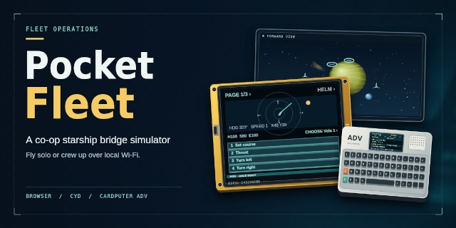

Pocket Fleet
A co-op starship bridge simulator for browsers, CYDs and Cardputers

A starship bridge simulator for one player or a room full of people, where each person crews a station from a browser, a Cheap Yellow Display or an M5 Cardputer ADV over local Wi-Fi.
Executive summary
Why it exists
I wanted a bridge game for a room of people with whatever screens they have: a laptop hosts the fleet, a projector shows the forward view, and everyone else takes a station on a phone browser or a cheap ESP32 board.
Outcome
It plays solo in a browser, including the GitHub Pages demo, and hosts a room from one computer. The firmware builds for the 2.8 inch CYD with about 50 KB of static RAM and 1.02 MB of app flash; touch calibration and the hotspot gateway still need testing on the boards. The game rules have Node tests.
My role
Designer and director. Built with OpenAI Codex (GPT-6 Sol) from my directions over October 2 and 3, 2026. The social preview was made with ChatGPT.
Technical overview
How it works
A browser app and a small Node host that uses only the standard library, with shared game rules for both. The host keeps fleet state on the local Wi-Fi; players find fleets, pick a ship and a station (Helm, Weapons, Engineering, Communications) and can lock a fleet or ship with a code. Firmware in C++ runs the same stations on the 2.8 and 3.5 inch CYDs and the M5 Cardputer ADV; a CYD can scan for short 🚀 hotspot names and board a ship. Players start in personal quarters with an animated cadet they can customize, and keep a service record. A flash page installs the firmware from Chrome or Edge with Web Serial.
Hard parts
The CYD has a 320 x 240 touch screen, so each station's controls had to fit pages of large buttons. Browser pages cannot scan Wi-Fi or read signal strength, so only the boards list nearby hotspots. The local connection is unencrypted, so the fleet lock is a casual room gate, not account security.
How it was made
The web app, Node host, firmware and tests were written with OpenAI Codex (GPT-6 Sol) in six sessions. The cadet art is an AI-generated asset pack, rebuilt into indexed frames, and the social preview came from ChatGPT.